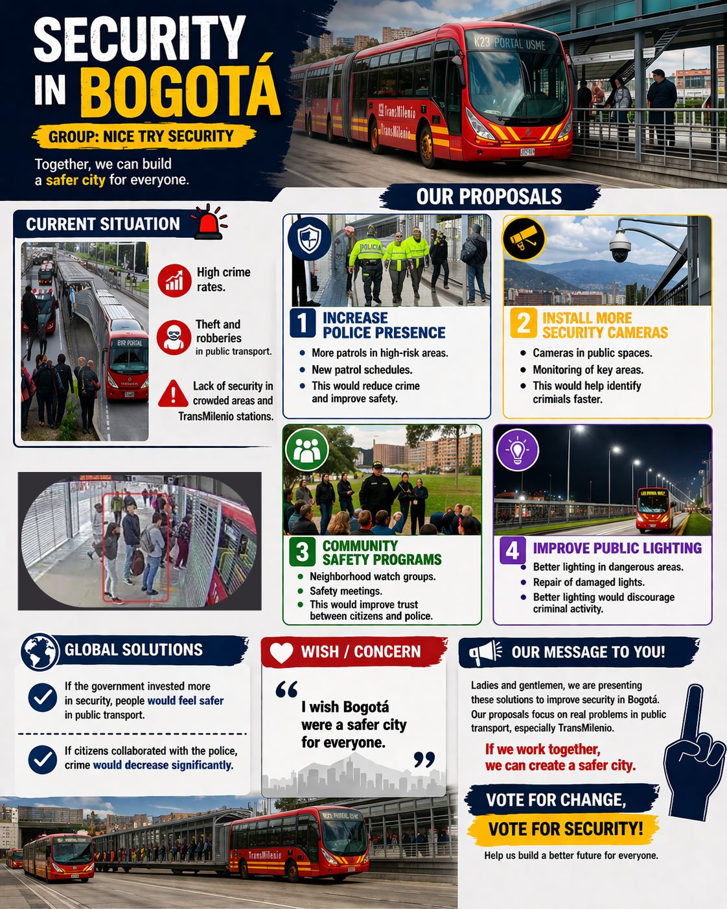

I have used the future tense forms (will, be going to, and would)
-I am going to improve my English during this semester.
-I am going to practice speaking more in my classes.
-Next semester, I am meeting my academic advisor to discuss my progress.
-My classmates and I are preparing a software project for next month.
-I am visiting the university library tomorrow to study programming.
-If I had more free time, I would study English every day.
-If I spoke English better, I would feel more confident in presentations.
-If I finished my studies successfully, I would apply for a technology company.
-I am going to continue learning new programming languages.
-My teachers are reviewing our final projects next week.
Text:
I like listening to music in my free time.
I enjoy playing video games and watching movies.
These activities help me relax after studying.
Sometimes, I also spend time reading comics and watching animated series.
In the future, I am going to use these interests to improve my creativity in my academic projects.
Strategy 01 · Reading Aloud
This activity helped me identify pronunciation mistakes. I noticed that sometimes I pause too much when speaking. I still need to work on fluency and confidence.
Strategy 02 · Self-recording
This strategy helped me improve my pronunciation. I learned to pay attention to pauses and intonation. I still need to practice difficult words more often.
Strategy 03 · Personalizing
This activity helped me understand how to use will to talk about future plans. I learned that future sentences can be simple and clear. I still need to improve grammar and sentence structure.
Strategy 04 · Literature for Grammar
This strategy helped me understand how English sentences are organized. I learned how to write a short paragraph using a model. I still need more vocabulary to express more ideas.
Students will work in pairs or small groups to create and present a political campaign as if they were global leaders. In this activity, they will imagine that they rule the world and explain what actions they would take to solve urgent global problems such as poverty, pollution, inequality, education, and climate change.

I have been studying Software Development Technology at Politécnico Grancolombiano since 2024.
I have been developing academic projects related to programming and problem solving.
I have been learning how software can improve daily life through technology.
This academic process has helped me improve my technical skills and prepare for my professional future.
- What have you learned in your life so far?
I have been studying at university for two years. I have been learning programming, databases, and software design.
- What responsabilites have you had in your work/university?
I have also been improving my communication skills because they are important for my future career.
- How long have you been at your current job/career?
I have been studying Software Development Technology at POLI since 2024.
Professional Profile
I am a student of Software Development Technology at Politécnico Grancolombiano.
I have been learning different programming languages and developing academic projects since 2024.
I am responsible, organized, and interested in creating software solutions that can help people solve everyday problems.
Professional Achievements
I have Worked in the software development area for 5 years , in addintion i have developed apps and websites to some important companies.
I have been completing academic projects in software development, and I have been improving my knowledge of programming logic and system design.
I have been to various conferences about development and technology advances, in which, I have presented some proyects that i have developed.
I have also been strengthening my teamwork skills by participating in collaborative university activities.
Current Professional Activities
I have been studying software development and improving my technical knowledge.
Recently, I have been working on projects that involve application design and problem solving.
I have been developing various programs that have resolved complex problems to big company.
I have been Working in teams to the susyainable energy develop, there fore, I have been learning about as apply renewable energy Systems.